All maps are ours. Each row shares an M9 genome and seed. Left: M9 levels with a diagnostic channel cut. Middle: independent spatial controls. Right: controls plus constrained levels (including rejected proposals).
Blue marks candidate drainage channels, not simulated water. Green/tan shows height, not moisture. No starts, slopes, plants, or voxel caves are placed. 22-level baselines stretch M9's 16-level result.
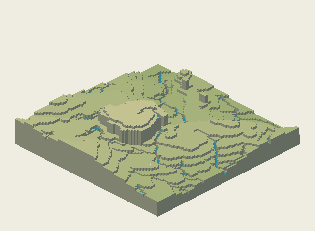
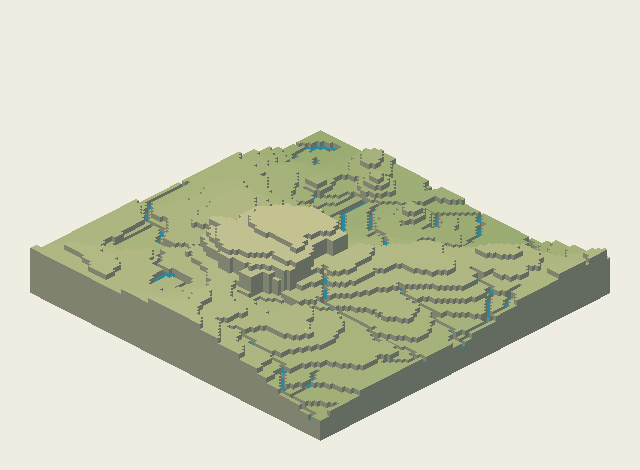
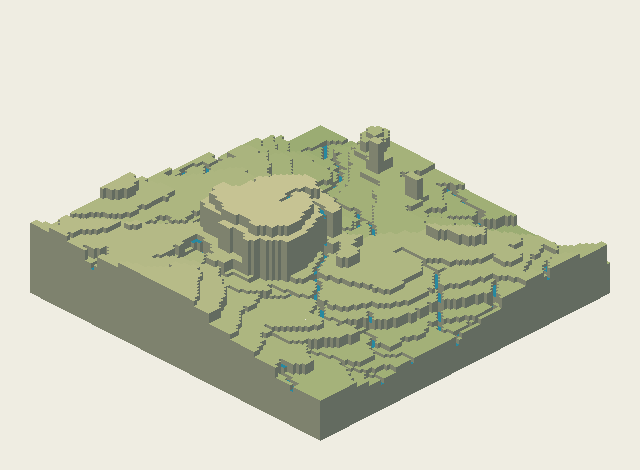
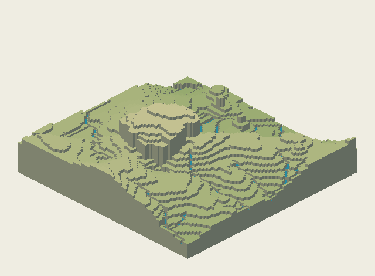
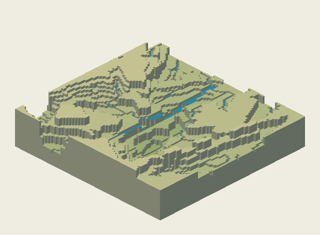
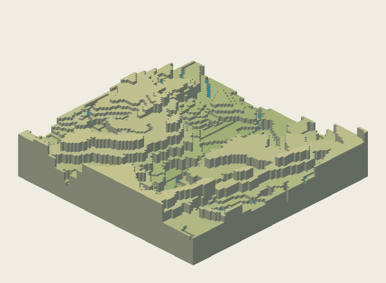
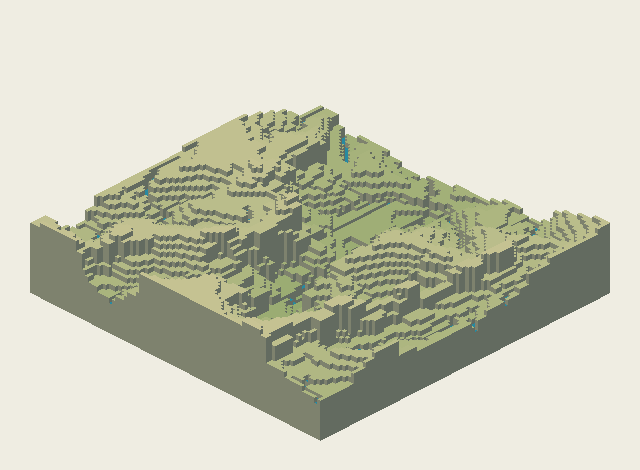
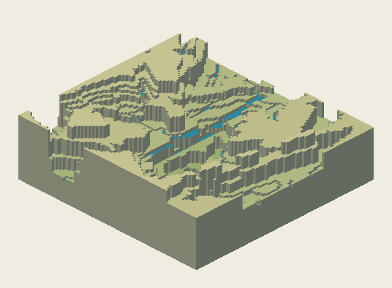
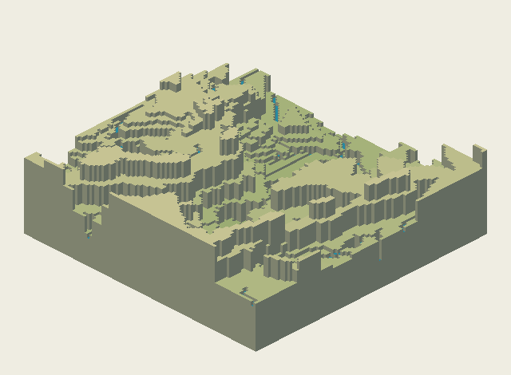
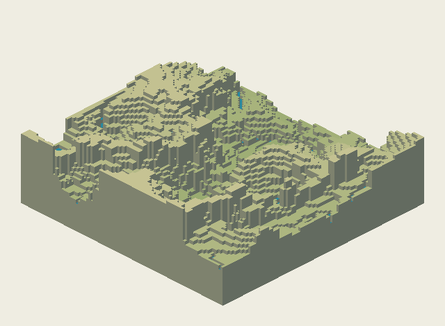
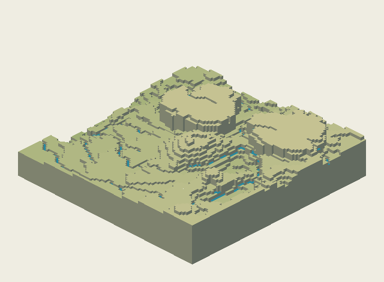
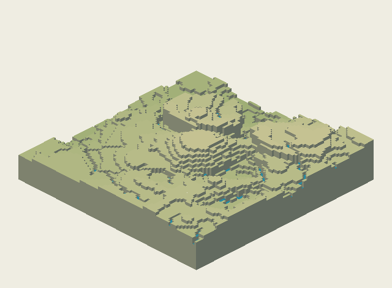
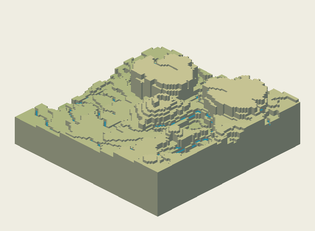
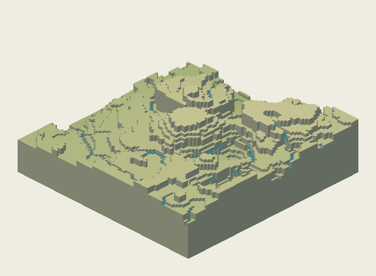
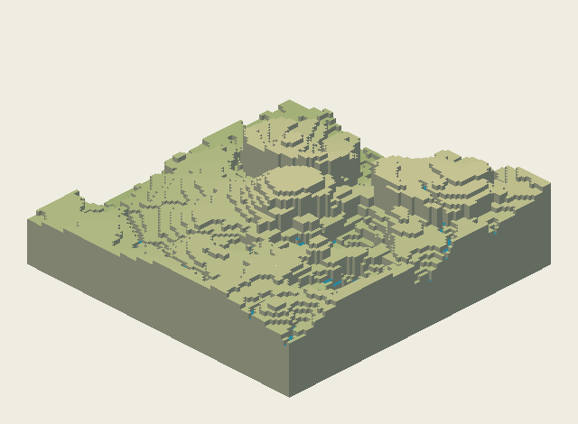